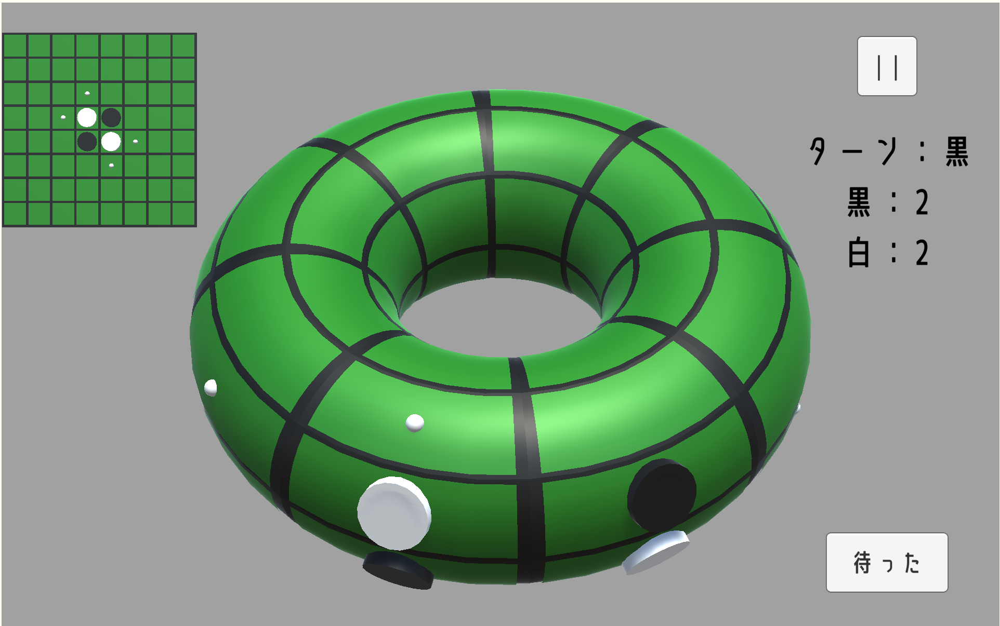

私がUnityでつくったゲームまとめ
Unityで様々なゲーム（主にオセロ）をつくったので、公開したいと思います。
ゲームはどんどん追加していきたいと思います。
※私の気まぐれでこのページがなくなったり大幅に変更されたりするかもしれません。
※基本的にPCで遊ぶことを前提に作られています。
※ゲームのクオリティは期待しないでください。
テスト

|
これはテスト用のページですが、サッカーボールを頑張ってつくったので、残しておきたいと思います。 | |
リバーシ（オセロ）

|
ただのリバーシ（オセロ）です。コンピュータ対戦もありませんし、オンライン対戦機能もありません。 | |
| 円柱オセロ | 円柱オセロです。 | |
| ずらし円柱オセロ | ずらし円柱オセロです。通常のオセロ盤の1組の対辺が一つずれてつながっています。 | |
| 二辺接続オセロ | 通常のオセロ盤で一つの角をはさむ二辺がつながったオセロです。 | |
| トーラスオセロ  | トーラスオセロです。 | |
| ずらしトーラスオセロ | ずらしトーラスオセロです。通常のオセロ盤が上下左右に一つずれてつながっています。 |